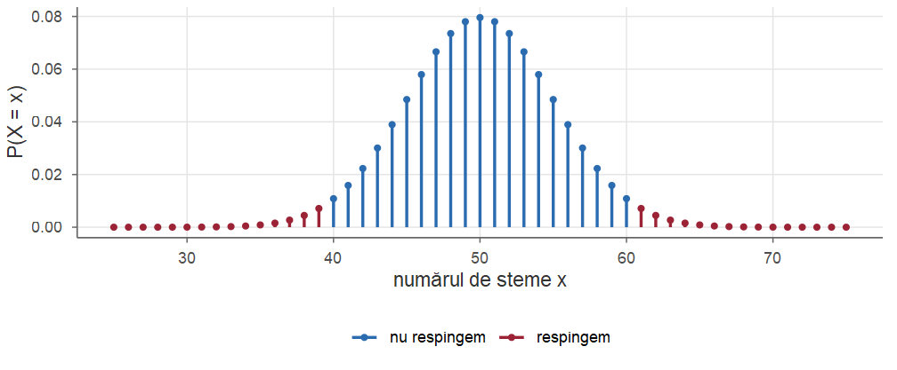
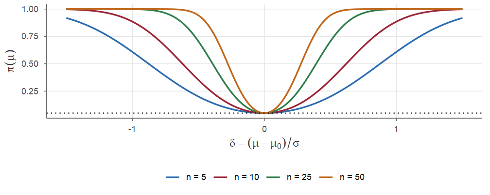
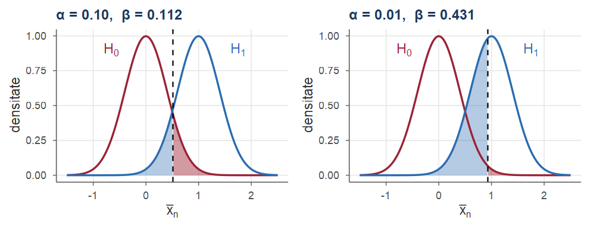
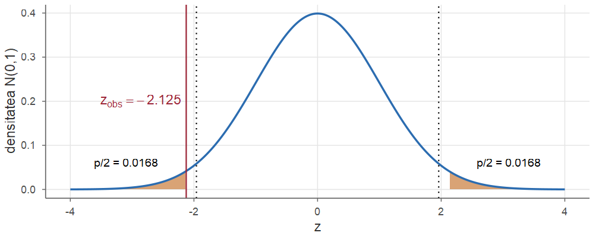
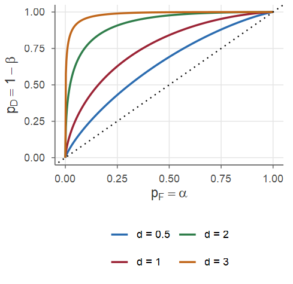
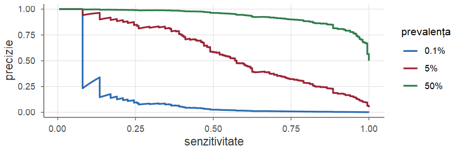
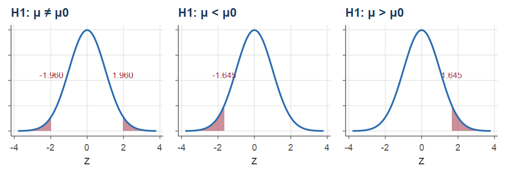
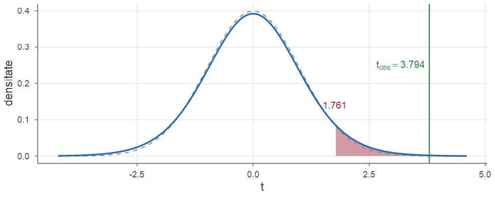
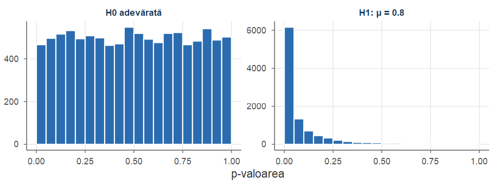

Probabilități și Statistică · Cursul 13
Universitatea din București · Facultatea de Matematică și Informatică · 2026–2027
| Partea | Conținut |
|---|---|
| I | Exemplul monedei; ipoteze, statistică de test, regiune critică; erori de tip I și II; funcția putere |
| II | p-valoarea; dualitatea intervale–teste; lema Neyman–Pearson; testele ca detectoare (curba ROC, precizie); testele \(z\) și \(t\) pentru medie |
| III | Testul \(\chi^2\) pentru varianță; două medii, date pereche, testul \(F\); proporții; \(\chi^2\) de concordanță; volumul eșantionului; R |
| IV | Tabele de sinteză; exerciții rezolvate |
La sfârșitul cursului, studenții ar trebui să poată:
qt(alpha, k), \(\chi^2_{k;\alpha}\) = qchisq(alpha, k), \(F_{m,n;\alpha}\) = qf(alpha, m, n).Azi: aceleași statistici pivot, folosite pentru a lua decizii de tip da / nu.
Până acum: cât valorează parametrul? (estimație punctuală, Cursul 10; interval de încredere, Cursul 12).
Foarte des întrebarea practică este de tip da sau nu:
Formulăm o ipoteză statistică și decidem, pe baza datelor, dacă ea trebuie respinsă sau nu.
Teoria a fost dezvoltată în anii 1920–1930 de R. A. Fisher, J. Neyman și E. S. Pearson. Datele fiind aleatoare, orice regulă de decizie poate greși: erorile nu pot fi eliminate, dar pot fi cuantificate și controlate.
Aruncăm o monedă suspectă de \(n=100\) de ori și notăm numărul \(X\) de steme. Dacă \(p\) este probabilitatea stemei, \(X\sim\Bin(100,p)\); întrebarea este dacă \(p=1/2\).
Dacă moneda este echilibrată, ne așteptăm la aproximativ 50 de steme: 52 sau 47 nu surprind, dar 75 ar fi foarte suspect. Regula naturală:
declarăm moneda măsluită dacă \(|X-50|\ge c\), pentru un prag \(c\) convenabil.
Cerem ca probabilitatea de a acuza pe nedrept o monedă corectă să fie cel mult \(0.05\).
Regula aleasă: respingem ipoteza \(p=1/2\) dacă \(X\le39\) sau \(X\ge61\).

Exemplul monedei conține toate ingredientele unui test statistic:
Testarea ipotezelor seamănă cu un proces penal.
Fie \(\{F_\theta:\theta\in\Theta\}\) un model statistic. O ipoteză statistică este o afirmație de forma \(\theta\in\Theta_0\), unde \(\Theta_0\subset\Theta\). Într-o problemă de testare se consideră două ipoteze:
O ipoteză se numește simplă dacă mulțimea corespunzătoare are un singur element (ea determină complet repartiția) și compusă în caz contrar.
Pentru un parametru real și o valoare de referință \(\theta_0\): \[ \begin{aligned} &\text{(bilaterală)} && H_0:\ \theta=\theta_0 \quad\text{vs}\quad H_1:\ \theta\ne\theta_0,\\ &\text{(unilaterală dreapta)} && H_0:\ \theta=\theta_0\ (\text{sau }\theta\le\theta_0) \quad\text{vs}\quad H_1:\ \theta>\theta_0,\\ &\text{(unilaterală stânga)} && H_0:\ \theta=\theta_0\ (\text{sau }\theta\ge\theta_0) \quad\text{vs}\quad H_1:\ \theta<\theta_0 . \end{aligned} \]
Alternativa se alege înainte de a vedea datele, în funcție de întrebarea studiată. O alternativă unilaterală se justifică doar dacă abaterile în sens opus nu prezintă interes (sau sunt imposibile).
Un test pentru \(H_0\) contra \(H_1\) este o regulă care, pentru fiecare realizare \(\bx=(x_1,\dots,x_n)\) a eșantionului, decide fie „respingem \(H_0\)”, fie „nu respingem \(H_0\)”. Mulțimea \[ W=\{\bx:\ \text{respingem } H_0\} \] se numește regiune critică (de respingere), iar complementara ei — regiune de acceptare. De regulă \(W\) se descrie printr-o statistică de test \(T=T(X_1,\dots,X_n)\): \(W=\{\bx: T(\bx)\in C\}\), cu \(C\subset\R\) (de exemplu \(C=[c,\infty)\)); valorile care delimitează \(C\) se numesc valori critice.
O statistică de test bună:
În exemplu: sub \(H_0\), \(X\sim\Bin(100,1/2)\) (complet cunoscută); dacă \(p\ne1/2\), \(X\) tinde să se depărteze de 50.
Orice decizie bazată pe date aleatoare poate fi greșită. Cele patru situații posibile:
| Decizia \ Realitatea | \(H_0\) adevărată | \(H_0\) falsă (\(H_1\) adevărată) |
|---|---|---|
| nu respingem \(H_0\) | decizie corectă: \(1-\alpha\) | eroare de tip II: \(\beta\) |
| respingem \(H_0\) | eroare de tip I: \(\alpha\) | decizie corectă (putere): \(1-\beta\) |
Fie un test cu regiunea critică \(W\).
Moneda: mărimea testului este \(\pi(1/2)=0.0352\), deci testul are nivelul \(0.05\); \(\pi(0.6)=0.462\), \(\beta(0.6)=0.538\).
Notațiile diferă de la o carte la alta. Unii autori (de exemplu Casella și Berger) notează funcția putere cu \(\beta(\theta)\); noi rezervăm litera \(\beta\) pentru probabilitatea erorii de tip II, \(\beta(\theta)=1-\pi(\theta)\), notație frecventă în aplicații (Rice, Ross).
Greutatea pachetelor umplute de o mașină este \(\Norm(\mu,\sigma^2)\) cu \(\sigma=4\) g. Testăm \(H_0:\mu=500\) contra \(H_1:\mu\ne500\) pe baza a \(n=25\) de pachete, cu regula: respingem \(H_0\) dacă \[ |Z|\ge z_{1-\alpha/2},\qquad Z=\frac{\Xbar-500}{\sigma/\sqrt n}. \] Sub \(H_0\), \(Z\sim\Norm(0,1)\), deci testul are nivelul exact \(\alpha\): \(\PP_{500}(|Z|\ge z_{1-\alpha/2})=2\big(1-\Phi(z_{1-\alpha/2})\big)=\alpha\).
Dacă media adevărată este \(\mu\), notăm \(\delta=(\mu-500)/\sigma\) (abaterea standardizată). Atunci \[ Z=\frac{\Xbar-\mu}{\sigma/\sqrt n}+\frac{\mu-500}{\sigma/\sqrt n}\sim\Norm\big(\delta\sqrt n,\,1\big), \] deci, cu \(Z'=Z-\delta\sqrt n\sim\Norm(0,1)\), \[ \begin{aligned} \pi(\mu)&=\PP_\mu(Z\ge z_{1-\alpha/2})+\PP_\mu(Z\le -z_{1-\alpha/2})\\ &=\PP\big(Z'\ge z_{1-\alpha/2}-\delta\sqrt n\big)+\PP\big(Z'\le -z_{1-\alpha/2}-\delta\sqrt n\big)\\ &=\Phi\big(-z_{1-\alpha/2}+\delta\sqrt n\big)+\Phi\big(-z_{1-\alpha/2}-\delta\sqrt n\big). \end{aligned} \]
Pentru \(\alpha=0.05\) (\(z_{0.975}=1.96\)) și \(\mu=498\): \(\delta\sqrt n=-0.5\cdot5=-2.5\), deci \[ \pi(498)=\Phi(-1.96-2.5)+\Phi(-1.96+2.5)=\Phi(-4.46)+\Phi(0.54)=0.705 . \]

Toate curbele trec prin \((0,\alpha)\) și cresc spre 1 când \(|\delta|\) crește — cu atât mai repede cu cât \(n\) este mai mare.
Pentru un volum \(n\) fixat, cele două probabilități de eroare nu pot fi micșorate simultan.

Deoarece \(\beta\) nu este controlat (și poate fi mare), concluzia „nu respingem \(H_0\)” este slabă: ea nu înseamnă că \(H_0\) a fost dovedită, ci doar că datele nu aduc dovezi suficiente împotriva ei. Formulări ca „acceptăm \(H_0\)” sau „am demonstrat că nu există diferență” trebuie evitate.
Concluzia „respingem \(H_0\)” este puternică, fiindcă probabilitatea de a o trage pe nedrept este cel mult \(\alpha\).
Decizia „respingem / nu respingem” la un nivel \(\alpha\) fixat pierde informație:
Soluția: raportăm p-valoarea, care măsoară cât de „extremă” este valoarea observată a statisticii de test, presupunând \(H_0\) adevărată.
Fie un test care respinge \(H_0\) pentru valori mari ale statisticii \(T\) și fie \(t_{\text{obs}}\) valoarea observată. p-valoarea (probabilitatea critică) este \[ p=\sup_{\theta\in\Theta_0}\PP_\theta\big(T\ge t_{\text{obs}}\big), \] adică probabilitatea, calculată în ipoteza \(H_0\), de a obține o valoare a statisticii de test cel puțin la fel de extremă (în direcția lui \(H_1\)) ca cea observată. Pentru un test bilateral bazat pe o statistică \(T\) cu repartiție simetrică sub \(H_0\), \(p=\PP_{H_0}(|T|\ge|t_{\text{obs}}|)\).
Fie \(H_0\) simplă și testul de nivel \(\alpha\) care respinge dacă \(T\ge c_\alpha\), cu \(\PP_{H_0}(T\ge c_\alpha)=\alpha\) (repartiție continuă). Funcția \(c\mapsto\PP_{H_0}(T\ge c)\) fiind descrescătoare, \[ t_{\text{obs}}\ge c_\alpha\iff \PP_{H_0}(T\ge t_{\text{obs}})\le\PP_{H_0}(T\ge c_\alpha)\iff p\le\alpha . \]
Deci p-valoarea este cel mai mic nivel de semnificație la care datele observate ar conduce la respingerea lui \(H_0\), iar regula de decizie universală este \[ \text{respingem } H_0 \text{ la nivelul } \alpha \iff p\le\alpha . \]
Fie \(H_0:\theta=\theta_0\) simplă și \(T\) o statistică de test cu funcția de repartiție \(G\) continuă sub \(H_0\). Dacă \(p=1-G(T)=\PP_{\theta_0}(T'\ge T)\) (unde \(T'\) este o copie independentă a lui \(T\)), atunci, sub \(H_0\), \(p\sim\Unif(0,1)\). În particular, \(\PP_{\theta_0}(p\le\alpha)=\alpha\), deci testul „respingem dacă \(p\le\alpha\)” are nivelul exact \(\alpha\).
Demonstrație. Sub \(H_0\), \(G(T)\sim\Unif(0,1)\) (transformarea integrală de probabilitate, valabilă pentru \(G\) continuă), deci și \(1-G(T)\sim\Unif(0,1)\). Mai detaliat, pentru \(u\in(0,1)\) și \(G^{-1}\) cuantila lui \(G\): \(\PP(G(T)\ge u)=\PP(T\ge G^{-1}(u))=1-G(G^{-1}(u))=1-u\).■
În situația din Exemplul 2 s-a obținut media \(\xbar=498.3\) g pentru \(n=25\) de pachete. Statistica de test este \[ z=\frac{498.3-500}{4/\sqrt{25}}=\frac{-1.7}{0.8}=-2.125, \] iar p-valoarea bilaterală este \(p=\PP(|Z|\ge2.125)=2\,\Phi(-2.125)=0.0336\).

O scară orientativă, folosită frecvent în practică:
| p-valoarea | interpretare |
|---|---|
| \(p>0.10\) | datele nu contrazic \(H_0\) |
| \(0.05<p\le0.10\) | dovezi slabe împotriva lui \(H_0\) |
| \(0.01<p\le0.05\) | dovezi moderate împotriva lui \(H_0\) |
| \(p\le0.01\) | dovezi puternice împotriva lui \(H_0\) |
Scara este convențională: pragul \(0.05\) nu are nimic special.
Următoarele afirmații sunt false:
În testul \(z\), \(H_0:\mu=\mu_0\) nu este respinsă la nivelul \(\alpha\) exact atunci când \[ \Big|\frac{\Xbar-\mu_0}{\sigma/\sqrt n}\Big|<z_{1-\alpha/2}\iff \mu_0\in\Big(\Xbar-z_{1-\alpha/2}\frac{\sigma}{\sqrt n},\ \Xbar+z_{1-\alpha/2}\frac{\sigma}{\sqrt n}\Big), \] adică exact când \(\mu_0\) aparține intervalului de încredere de nivel \(1-\alpha\).
Faptul este general.
Dacă pentru fiecare \(\theta_0\in\Theta\) avem un test de nivel \(\alpha\) pentru \(H_0:\theta=\theta_0\), cu regiunea de acceptare \(A(\theta_0)\), atunci mulțimea \[ C(\bx)=\{\theta_0\in\Theta:\ \bx\in A(\theta_0)\} \] este o mulțime de încredere de nivel \(1-\alpha\) pentru \(\theta\).
Reciproc, dacă \(C(\bX)\) este o mulțime de încredere de nivel \(1-\alpha\), atunci testul care respinge \(H_0:\theta=\theta_0\) dacă și numai dacă \(\theta_0\notin C(\bX)\) are nivelul \(\alpha\).
Demonstrație.
Pentru orice \(\theta\), prin definiția lui \(C\), \[ \theta\in C(\bX)\iff\bX\in A(\theta), \] deci \[ \PP_\theta\big(\theta\in C(\bX)\big)=\PP_\theta\big(\bX\in A(\theta)\big)=1-\PP_\theta\big(\bX\notin A(\theta)\big)\ge1-\alpha, \] deoarece testul pentru \(H_0:\theta_0=\theta\) are nivelul \(\alpha\).
\(\PP_{\theta_0}(\text{respingem } H_0)=\PP_{\theta_0}\big(\theta_0\notin C(\bX)\big)=1-\PP_{\theta_0}\big(\theta_0\in C(\bX)\big)\le\alpha\).
■
Pentru datele din Cursul 12 (soiul 1: \(n_1=12\), \(\bar x=85.2\), \(s_1=4.1\); soiul 2: \(n_2=15\), \(\bar y=81.6\), \(s_2=4.8\)), IÎ de nivel \(0.95\) pentru \(\mu_1-\mu_2\) (dispersii egale) era \([0.006,\ 7.194]\).
Deoarece \(0\notin[0.006,\ 7.194]\), testul bilateral de nivel \(0.05\) al ipotezei \(H_0:\mu_1=\mu_2\) o respinge. Într-adevăr, cu \(s_p=\sqrt{(11\cdot4.1^2+14\cdot4.8^2)/25}=4.505\), \[ t=\frac{85.2-81.6}{4.505\sqrt{1/12+1/15}}=2.063>t_{25;0.975}=2.0595, \] cu p-valoarea \(0.0496\) — foarte aproape de \(0.05\), după cum sugera capătul stâng al intervalului, foarte apropiat de 0.
sp <- sqrt((11 * 4.1^2 + 14 * 4.8^2) / 25) # abaterea standard comună
t <- 3.6 / (sp * sqrt(1/12 + 1/15))
c(sp = sp, t = t, critic = qt(0.975, 25), p_valoare = 2 * (1 - pt(t, df = 25)))
#> sp t critic p_valoare
#> 4.50542 2.06311 2.05954 0.04963
# intervalul de încredere dual (dispersii egale)
3.6 + c(-1, 1) * qt(0.975, 25) * sp * sqrt(1/12 + 1/15)
#> [1] 0.006226 7.193774Cum alegem statistica de test? Pentru două ipoteze simple, răspunsul optim este dat de lema fundamentală a lui Neyman și Pearson (1933).
Un test de nivel \(\alpha\) cu funcția putere \(\pi\) se numește uniform cel mai puternic (UMP) pentru \(H_0:\theta\in\Theta_0\) contra \(H_1:\theta\in\Theta_1\) dacă, pentru orice alt test de nivel \(\alpha\) cu funcția putere \(\pi'\), avem \(\pi(\theta)\ge\pi'(\theta)\) pentru orice \(\theta\in\Theta_1\).
Fie \(H_0:\theta=\theta_0\) și \(H_1:\theta=\theta_1\) două ipoteze simple și \(L(\theta;\bx)=\prod_{i=1}^n f(x_i;\theta)\) funcția de verosimilitate. Pentru \(k>0\), considerăm testul cu regiunea critică \[ W_k=\Big\{\bx:\ \frac{L(\theta_1;\bx)}{L(\theta_0;\bx)}\ge k\Big\}. \] Dacă \(\alpha=\PP_{\theta_0}(\bX\in W_k)\), atunci testul \(W_k\) este cel mai puternic test de nivel \(\alpha\): pentru orice regiune critică \(W\) cu \(\PP_{\theta_0}(\bX\in W)\le\alpha\) avem \[ \PP_{\theta_1}(\bX\in W)\le\PP_{\theta_1}(\bX\in W_k). \]
Demonstrație. Scriem \(L_j(\bx)=L(\theta_j;\bx)\), \(j=0,1\) (cazul continuu; cel discret este analog, cu sume). Considerăm funcția \[ g(\bx)=\big(\Ind_{W_k}(\bx)-\Ind_W(\bx)\big)\big(L_1(\bx)-kL_0(\bx)\big). \] \(g\) este nenegativă:
În ambele cazuri factorii au același semn, deci \(g(\bx)\ge0\).■
Demonstrație. Integrând \(g\ge0\) pe \(\R^n\) și folosind \(\int\Ind_A L_j=\PP_{\theta_j}(\bX\in A)\): \[ 0\le\int g=\big[\PP_{\theta_1}(W_k)-\PP_{\theta_1}(W)\big]-k\big[\PP_{\theta_0}(W_k)-\PP_{\theta_0}(W)\big]. \] Deoarece \(\PP_{\theta_0}(W_k)=\alpha\ge\PP_{\theta_0}(W)\) și \(k>0\), al doilea termen, \(-k[\,\cdot\,]\), este \(\le 0\). Rezultă \[ \PP_{\theta_1}(W_k)-\PP_{\theta_1}(W)\ge k\big[\PP_{\theta_0}(W_k)-\PP_{\theta_0}(W)\big]\ge0, \] adică \(\PP_{\theta_1}(W_k)\ge\PP_{\theta_1}(W)\).■
Fie \(X_1,\dots,X_n\sim\Norm(\mu,\sigma^2)\) cu \(\sigma\) cunoscut, \(H_0:\mu=\mu_0\), \(H_1:\mu=\mu_1\), unde \(\mu_1>\mu_0\). Raportul de verosimilitate este \[ \begin{aligned} \frac{L(\mu_1;\bx)}{L(\mu_0;\bx)}&=\exp\Big\{-\frac{1}{2\sigma^2}\sum_{i=1}^n\big[(x_i-\mu_1)^2-(x_i-\mu_0)^2\big]\Big\}\\ &=\exp\Big\{\frac{n(\mu_1-\mu_0)}{\sigma^2}\,\xbar-\frac{n(\mu_1^2-\mu_0^2)}{2\sigma^2}\Big\}, \end{aligned} \] o funcție strict crescătoare de \(\xbar\) (deoarece \(\mu_1>\mu_0\)).
Am folosit \((x_i-\mu_1)^2-(x_i-\mu_0)^2=-2x_i(\mu_1-\mu_0)+\mu_1^2-\mu_0^2\).
Prin urmare \(W_k=\{\bx:\ \xbar\ge c\}\) pentru un anumit \(c\), iar condiția de nivel \[ \PP_{\mu_0}(\Xbar\ge c)=1-\Phi\Big(\frac{c-\mu_0}{\sigma/\sqrt n}\Big)=\alpha \quad\Longrightarrow\quad c=\mu_0+z_{1-\alpha}\frac{\sigma}{\sqrt n}. \]
Testul cel mai puternic respinge \(H_0\) dacă \[ Z=\frac{\sqrt n(\Xbar-\mu_0)}{\sigma}\ge z_{1-\alpha}. \]
Majoritatea testelor din continuare pot fi obținute din principiul raportului de verosimilitate generalizat: se respinge \(H_0\) când \[ \Lambda=\frac{\sup_{\theta\in\Theta_0}L(\theta;\bx)}{\sup_{\theta\in\Theta}L(\theta;\bx)}\in(0,1] \] este mic. Teorema lui Wilks afirmă că, în condiții de regularitate, \(-2\ln\Lambda\dto\chisq{r}\) sub \(H_0\), unde \(r\) este diferența dintre numărul de parametri liberi din \(\Theta\) și din \(\Theta_0\) (Wasserman 2004, cap. 10).
Un filtru de spam, un detector de fraude, un radar, un test medical: toate aleg, pe baza datelor, între „nimic deosebit” (\(H_0\)) și „semnal prezent” (\(H_1\)).
Rezultatul testului este pozitiv dacă respingem \(H_0\) și negativ altfel: \[ \begin{array}{l|ll} & H_0\ \text{adevărată} & H_1\ \text{adevărată}\\ \hline \text{rezultat negativ} & \text{adevărat negativ (AN)} & \text{fals negativ (FN): omisiune}\\ \text{rezultat pozitiv} & \text{fals pozitiv (FP): alarmă falsă} & \text{adevărat pozitiv (AP): detecție} \end{array} \] Rata alarmelor false: \(p_F=\PP_{H_0}(\bX\in W)=\alpha\). Rata de detecție (senzitivitatea): \(p_D=\PP_{H_1}(\bX\in W)=1-\beta\), adică puterea.
Pe date etichetate: \(\hat p_F=\mathrm{FP}/(\mathrm{FP}+\mathrm{AN})\), \(\hat p_D=\mathrm{AP}/(\mathrm{AP}+\mathrm{FN})\).
Pentru testele „respingem \(H_0\) dacă \(T\ge c\)”, \(c\in\R\), curba ROC este mulțimea punctelor \[ \big(p_F(c),\,p_D(c)\big)=\big(\PP_{H_0}(T\ge c),\ \PP_{H_1}(T\ge c)\big): \] graficul puterii în funcție de nivelul \(\alpha\). Aria de sub curbă se notează AUC.

Eșantion din \(\Norm(\mu,\sigma^2)\), \(\sigma\) cunoscut, \(H_0:\mu=\mu_0\), \(H_1:\mu=\mu_1>\mu_0\); respingem dacă \(Z\ge z_{1-\alpha}\). Cu separarea \(d=\sqrt n(\mu_1-\mu_0)/\sigma\):
\(p_D=1-\Phi(z_{1-\alpha}-d)=\Phi(d+z_\alpha)\) (sub \(H_1\), \(Z\sim\Norm(d,1)\));
\(\mathrm{AUC}=\PP(Z_1\ge Z_0)=\Phi\big(d/\sqrt2\big)\), unde \(Z_0\sim\Norm(0,1)\), \(Z_1\sim\Norm(d,1)\) sunt independente.
Avem un scor și o etichetă (0/1) pentru fiecare caz; pragurile sunt scorurile, sortate descrescător.
roc <- function(scor, eticheta) { # praguri: scorurile, descrescător
y <- eticheta[order(scor, decreasing = TRUE)]
data.frame(fpr = cumsum(y == 0) / sum(y == 0), # rata alarmelor false
tpr = cumsum(y == 1) / sum(y == 1)) # rata de detecție
}
auc <- function(r) # aria, prin regula trapezelor
sum(diff(c(0, r$fpr)) * (c(0, head(r$tpr, -1)) + r$tpr) / 2)
set.seed(2026); d <- 2
eticheta <- rep(c(0, 1), c(3800, 200)) # 4000 de tranzacții, 5% fraude
scor <- rnorm(4000, mean = d * eticheta) # N(0,1) sau N(2,1)
r <- roc(scor, eticheta)
c(AUC = auc(r), teoretic = pnorm(d / sqrt(2)))
#> AUC teoretic
#> 0.9344 0.9214Aria empirică este aproape de valoarea teoretică \(\Phi(2/\sqrt2)\).
\(p_F\) și \(p_D\) descriu detectorul. Cel care primește alarma întreabă invers; răspunsul depinde de prevalența \(\pi=\PP(H_1)\).
Dacă \(H_1\) este adevărată cu probabilitatea \(\pi\), precizia este probabilitatea ca o alarmă să fie reală; din formula lui Bayes (Teorema 7 din Cursul 2), \[ \text{precizia}=\PP(H_1\mid\text{rezultat pozitiv})=\frac{\pi\,p_D}{\pi\,p_D+(1-\pi)\,p_F}. \] Pe date etichetate: precizia \(\approx\mathrm{AP}/(\mathrm{AP}+\mathrm{FP})\), senzitivitatea (recall) \(\approx\mathrm{AP}/(\mathrm{AP}+\mathrm{FN})\).
Este valoarea predictivă pozitivă a testului de diagnostic (Exemplul 7 din Cursul 2).
Detector de fraude cu \(\alpha=1\%\) și puterea \(95\%\); o tranzacție din \(1000\) este fraudă (\(\pi=0.001\)): \[ \text{precizia}=\frac{0.001\cdot0.95}{0.001\cdot0.95+0.999\cdot0.01}=\frac{0.00095}{0.01094}\approx0.087 . \] La un milion de tranzacții: \(1000\) de fraude dau \(950\) de alarme; \(999\,000\) de tranzacții legitime dau \(9990\).
precizie <- function(p) # formula lui Bayes, la fiecare prag
p * r$tpr / (p * r$tpr + (1 - p) * r$fpr)
pr <- data.frame(senzitivitate = r$tpr,
precizie = c(precizie(0.5), precizie(0.05), precizie(0.001)),
prevalenta = rep(c("50%", "5%", "0.1%"), each = nrow(r)))
ggplot(pr, aes(senzitivitate, precizie, colour = prevalenta)) + geom_line() +
labs(colour = "prevalența") + theme(legend.position = "right")
Curba ROC nu depinde de prevalență; precizia depinde esențial de ea.
\(X_1,\dots,X_n\sim\Norm(\mu,\sigma^2)\) Toate testele se bazează pe pivoții din Cursul 12, în care parametrul necunoscut se înlocuiește cu valoarea sa din \(H_0\).
Procedura generală:
Pentru \(H_0:\mu=\mu_0\): \[ Z=\frac{\Xbar-\mu_0}{\sigma/\sqrt n}\ \overset{H_0}{\sim}\ \Norm(0,1). \]
| \(H_1\) | Regiunea critică | p-valoarea |
|---|---|---|
| \(\mu\ne\mu_0\) | \(\lvert z\rvert\ge z_{1-\alpha/2}\) | \(2\big(1-\Phi(\lvert z\rvert)\big)\) |
| \(\mu>\mu_0\) | \(z\ge z_{1-\alpha}\) | \(1-\Phi(z)\) |
| \(\mu<\mu_0\) | \(z\le z_{\alpha}=-z_{1-\alpha}\) | \(\Phi(z)\) |
Pentru \(\alpha=0.05\): valorile critice sunt \(\pm1.96\) (bilateral) și \(\pm1.645\) (unilateral).

În fiecare caz aria roșie totală este \(\alpha=0.05\); regiunea critică este plasată „în direcția lui \(H_1\)”.
Rezumăm testul din Exemplul 3 după cei cinci pași:
IÎ de nivel \(0.95\), \(498.3\pm1.96\cdot0.8=[496.73,\ 499.87]\), nu conține 500, în acord cu Teorema 6.
Când \(\sigma\) este necunoscut, îl înlocuim cu \(S_n\); din teorema lui Fisher (Cursul 8), \[ T=\frac{\Xbar-\mu_0}{S_n/\sqrt n}\ \overset{H_0}{\sim}\ \Stud{n-1}. \]
| \(H_1\) | Regiunea critică | p-valoarea (\(T\sim\Stud{n-1}\)) |
|---|---|---|
| \(\mu\ne\mu_0\) | \(\lvert t\rvert\ge t_{n-1;1-\alpha/2}\) | \(2\,\PP(T\ge\lvert t\rvert)\) |
| \(\mu>\mu_0\) | \(t\ge t_{n-1;1-\alpha}\) | \(\PP(T\ge t)\) |
| \(\mu<\mu_0\) | \(t\le -t_{n-1;1-\alpha}\) | \(\PP(T\le t)\) |
p-valorile se calculează cu funcția de repartiție Student (pt).
Un furnizor garantează un timp mediu de răspuns de cel mult 200 ms. Timpii (ms) pentru 15 cereri: \[ 212,\ 198,\ 225,\ 207,\ 219,\ 193,\ 231,\ 204,\ 216,\ 209,\ 222,\ 201,\ 214,\ 196,\ 228 . \] Testăm \(H_0:\mu=200\) (sau \(\mu\le200\)) contra \(H_1:\mu>200\), \(\alpha=0.05\). Avem \(\xbar=211.667\), \(s=11.908\), deci \[ t=\frac{211.667-200}{11.908/\sqrt{15}}=\frac{11.667}{3.0747}=3.794>t_{14;0.95}=1.761 . \] Respingem \(H_0\); p-valoarea este \(\PP(T_{14}\ge3.794)=0.00099\). Timpul mediu de răspuns depășește convingător valoarea garantată; marginea inferioară de încredere de nivel \(0.95\), \(206.25\) ms, precizează cu cât.
t.testy <- c(212, 198, 225, 207, 219, 193, 231, 204, 216, 209, 222, 201, 214, 196, 228)
t.test(y, mu = 200, alternative = "greater")
#>
#> One Sample t-test
#>
#> data: y
#> t = 3.7944, df = 14, p-value = 0.0009863
#> alternative hypothesis: true mean is greater than 200
#> 95 percent confidence interval:
#> 206.2511 Inf
#> sample estimates:
#> mean of x
#> 211.6667
Pentru \(H_0:\sigma^2=\sigma_0^2\) (populație normală): \[ \chi^2=\frac{(n-1)S_n^2}{\sigma_0^2}\ \overset{H_0}{\sim}\ \chisq{n-1}. \]
| \(H_1\) | Regiunea critică |
|---|---|
| \(\sigma^2\ne\sigma_0^2\) | \(\chi^2\le\chi^2_{n-1;\alpha/2}\) sau \(\chi^2\ge\chi^2_{n-1;1-\alpha/2}\) |
| \(\sigma^2>\sigma_0^2\) | \(\chi^2\ge\chi^2_{n-1;1-\alpha}\) |
| \(\sigma^2<\sigma_0^2\) | \(\chi^2\le\chi^2_{n-1;\alpha}\) |
Specificația tehnică a liniei de îmbuteliere din Exemplul 4 din Cursul 12 cere o abatere standard de cel mult 1 ml. Pentru cele 10 sticle, \(s^2=2.3388\). Testăm \(H_0:\sigma^2=1\) contra \(H_1:\sigma^2>1\): \[ \chi^2=\frac{9\cdot2.3388}{1}=21.049>\chi^2_{9;0.95}=16.919, \] deci respingem \(H_0\) la nivelul \(0.05\); p-valoarea este \(\PP(\chi^2_9\ge21.049)=0.0124\). Variabilitatea umplerii depășește specificația.
\(X_1,\dots,X_{n_1}\sim\Norm(\mu_1,\sigma_1^2)\) și \(Y_1,\dots,Y_{n_2}\sim\Norm(\mu_2,\sigma_2^2)\) independente; \(H_0:\mu_1-\mu_2=\Delta_0\) (de obicei \(\Delta_0=0\)).
Regiunile critice se obțin exact ca la testele cu un eșantion.
Gradele de libertate \(\nu\) se calculează cu formula Welch–Satterthwaite: \[ \nu=\frac{\big(s_1^2/n_1+s_2^2/n_2\big)^2}{\dfrac{(s_1^2/n_1)^2}{n_1-1}+\dfrac{(s_2^2/n_2)^2}{n_2-1}} \] (în general un număr neîntreg, \(\min(n_1,n_2)-1\le\nu\le n_1+n_2-2\)).
t.test(x, y)) și este, în general, recomandat: pierde foarte puțină putere când dispersiile sunt egale, dar își păstrează nivelul când nu sunt.t.test(x, y, var.equal = TRUE).Pentru datele din Exercițiul 4 din Cursul 12 (grupa A: \(n_1=8\), \(\bar x=26.5\), \(s_1^2=6\); grupa B: \(n_2=10\), \(\bar y=22\), \(s_2^2=6.667\)) testăm \(H_0:\mu_A=\mu_B\) contra \(H_1:\mu_A\ne\mu_B\). Cu \(s_p=2.525\), \[ t=\frac{26.5-22}{2.525\sqrt{1/8+1/10}}=\frac{4.5}{1.1977}=3.757,\qquad t_{16;0.975}=2.120, \] deci respingem \(H_0\) (\(p=0.0017\)). Testul Welch: \(t=3.781\), \(\nu=15.47\), \(p=0.0017\).
Când fiecare observație dintr-un eșantion este legată natural de una din celălalt (aceeași persoană înainte și după tratament, aceeași piesă măsurată cu două aparate, gemeni etc.), eșantioanele nu sunt independente.
t.test(x, y, paired = TRUE).Pentru cei 8 pacienți din Exercițiul 5 din Cursul 12, diferențele înainte–după sunt \(8,5,9,2,8,8,3,8\), cu \(\bar d=6.375\) și \(s_d=2.669\). Testăm \(H_0:\mu_D=0\) contra \(H_1:\mu_D\ne0\): \[ t=\frac{6.375}{2.669/\sqrt8}=6.755,\qquad t_{7;0.975}=2.365, \] deci respingem \(H_0\) cu \(p=0.00026\): tratamentul reduce tensiunea.
Dacă am ignora împerecherea și am aplica testul pentru eșantioane independente, am obține \(p=0.08\) și nu am putea respinge \(H_0\) la nivelul 5%.
Pentru \(H_0:\sigma_1^2=\sigma_2^2\) (populații normale, eșantioane independente) folosim raportul varianțelor de selecție: \[ F=\frac{S_1^2}{S_2^2}\ \overset{H_0}{\sim}\ \Fish{n_1-1}{n_2-1}. \]
var.test.Pentru datele din Exemplul 4, \(F=4.1^2/4.8^2=0.7296\). Valorile critice pentru \(\alpha=0.05\) sunt \(F_{11,14;0.025}=0.298\) și \(F_{11,14;0.975}=3.095\), iar \(0.298<0.7296<3.095\), deci nu respingem ipoteza egalității dispersiilor. p-valoarea este \(2\min\{G(0.7296),1-G(0.7296)\}=2\cdot0.3033=0.607\).
Practica de a efectua întâi un test \(F\) și apoi, în funcție de rezultat, testul \(t\) cu dispersii egale sau testul Welch este descurajată:
Este preferabil să folosim direct testul Welch.
\(X\sim\Bin(n,p)\) numărul de succese, \(\hat p=X/n\), \(H_0:p=p_0\). Pentru \(n\) mare (teorema Moivre–Laplace): \[ Z=\frac{\hat p-p_0}{\sqrt{p_0(1-p_0)/n}}\ \overset{H_0}{\approx}\ \Norm(0,1), \] iar regiunile critice sunt cele ale testului \(z\).
binom.test).În sondajul din Exemplul 9 din Cursul 12, 624 din 1200 de persoane susțin propunerea. Testăm \(H_0:p=0.5\) contra \(H_1:p>0.5\). Avem \(\hat p=0.52\) și \[
z=\frac{0.52-0.5}{\sqrt{0.5\cdot0.5/1200}}=\frac{0.02}{0.01443}=1.386,\qquad p=1-\Phi(1.386)=0.083 .
\] Deoarece \(p>0.05\), nu putem afirma, la nivelul 5%, că majoritatea populației susține propunerea. Funcția prop.test raportează statistica \(\chi^2=z^2=1.92\) (cu un grad de libertate) și aceeași p-valoare.
\(X_1\sim\Bin(n_1,p_1)\) și \(X_2\sim\Bin(n_2,p_2)\) independente; \(H_0:p_1=p_2\).
prop.test(c(k1, k2), c(n1, n2), correct = FALSE), care raportează \(\chi^2=z^2\).Pentru datele din Exercițiul 7 din Cursul 12 (84 de clicuri din 300 pentru varianta A, 60 din 300 pentru B): \(\hat p_1=0.28\), \(\hat p_2=0.20\), \(\hat p=144/600=0.24\) și \[ z=\frac{0.28-0.20}{\sqrt{0.24\cdot0.76\cdot(2/300)}}=\frac{0.08}{0.03487}=2.294,\qquad p=2(1-\Phi(2.294))=0.0218 . \] Respingem ipoteza egalității ratelor de click la nivelul 5%, în acord cu intervalul de încredere \([0.012,\ 0.148]\) obținut în Cursul 12.
prop.testprop.test(c(84, 60), c(300, 300), correct = FALSE)
#>
#> 2-sample test for equality of proportions without continuity
#> correction
#>
#> data: c(84, 60) out of c(300, 300)
#> X-squared = 5.2632, df = 1, p-value = 0.02178
#> alternative hypothesis: two.sided
#> 95 percent confidence interval:
#> 0.01195415 0.14804585
#> sample estimates:
#> prop 1 prop 2
#> 0.28 0.20Rezultatul conține statistica \(\chi^2=z^2=5.263\), p-valoarea, IÎ pentru \(p_1-p_2\) și proporțiile estimate.
Testul \(\chi^2\) al lui Pearson (1900) verifică dacă datele sunt compatibile cu o repartiție dată.
Sub \(H_0\), când \(n\to\infty\), \(\chi^2\dto\chisq{k-1}\). Dacă probabilitățile \(p_j^0\) depind de \(r\) parametri necunoscuți estimați din date (prin verosimilitate maximă pe datele grupate), atunci \(\chi^2\dto\chisq{k-1-r}\).
Un zar a fost aruncat de 120 de ori:
| Fața | 1 | 2 | 3 | 4 | 5 | 6 |
|---|---|---|---|---|---|---|
| Frecvența observată \(O_j\) | 14 | 22 | 18 | 25 | 16 | 25 |
Sub \(H_0\) (zar corect) \(E_j=20\) pentru orice \(j\), iar \[ \chi^2=\frac{36+4+4+25+16+25}{20}=\frac{110}{20}=5.5 . \] Cu \(k-1=5\) grade de libertate, \(\chi^2_{5;0.95}=11.07>5.5\) și \(p=0.358\): datele nu contrazic ipoteza că zarul este corect.
La planificarea unui studiu se fixează \(\alpha\) și puterea dorită \(1-\beta\) (uzual \(0.80\) sau \(0.90\)) pentru o abatere \(\delta=\mu_1-\mu_0\) relevantă practic.
Testul \(z\) unilateral (\(H_1:\mu>\mu_0\)) respinge dacă \(\Xbar\ge\mu_0+z_{1-\alpha}\sigma/\sqrt n\); puterea în \(\mu_1\) este \[ \pi(\mu_1)=\PP_{\mu_1}\Big(\frac{\Xbar-\mu_1}{\sigma/\sqrt n}\ge z_{1-\alpha}-\frac{\delta\sqrt n}{\sigma}\Big)=1-\Phi\Big(z_{1-\alpha}-\frac{\delta\sqrt n}{\sigma}\Big). \] Condiția \(\pi(\mu_1)\ge1-\beta\) se scrie \(z_{1-\alpha}-\delta\sqrt n/\sigma\le -z_{1-\beta}\), adică \[ n\ \ge\ \Big(\frac{(z_{1-\alpha}+z_{1-\beta})\,\sigma}{\delta}\Big)^2 . \]
power.t.test rezolvă ecuația numeric, pentru oricare dintre mărimile \(n\), \(\delta\), \(\sigma\), \(\alpha\) sau putere, când celelalte sunt date.Vrem să detectăm cu puterea \(0.80\), printr-un test bilateral de nivel \(0.05\), o abatere a mediei de \(\delta=5\) unități, știind (dintr-un studiu-pilot) că \(\sigma\approx10\). Cu \(z_{0.975}=1.96\) și \(z_{0.80}=0.8416\), \[ n\ge\Big(\frac{(1.96+0.8416)\cdot10}{5}\Big)^2=31.4, \] deci \(n=32\) pentru testul \(z\).
power.t.test indică \(n=33.4\), deci \(34\) de observații (prețul necunoașterii lui \(\sigma\)).((qnorm(0.975) + qnorm(0.80)) * 10 / 5)^2
#> [1] 31.4
power.t.test(delta = 5, sd = 10, power = 0.80, type = "one.sample")$n
#> [1] 33.37
power.t.test(delta = 5, sd = 10, power = 0.80)$n # două eșantioane
#> [1] 63.77
# invers: puterea obținută cu n = 20 de observații (un eșantion)
power.t.test(n = 20, delta = 5, sd = 10, type = "one.sample")$power
#> [1] 0.5645Funcțiile R pentru teste returnează un obiect de clasă htest. Testul \(t\) pentru server, de data aceasta bilateral:
t = 3.7944, df = 14 — valoarea observată a statisticii de test și gradele de libertate ale repartiției sale sub \(H_0\);p-value = 0.001973 — p-valoarea (bilaterală, dublul celei unilaterale din Exemplul 9);alternative hypothesis — alternativa folosită (argumentul alternative = "two.sided", "less" sau "greater");95 percent confidence interval — IÎ dual testului; nu conține 200, în acord cu respingerea lui \(H_0\);sample estimates — estimația punctuală a parametrului.Componentele se pot extrage individual: $statistic, $parameter, $p.value, $conf.int, $estimate.
| Test | Funcția R |
|---|---|
| \(t\) pentru o medie | t.test(x, mu = mu0, alternative = ...) |
| \(t\) pentru două medii | t.test(x, y) / t.test(x, y, var.equal = TRUE) |
| \(t\) pentru date pereche | t.test(x, y, paired = TRUE) |
| \(F\) pentru două dispersii | var.test(x, y) |
| o proporție | prop.test(k, n, p = p0, correct = FALSE) / binom.test(k, n, p = p0) |
| două proporții | prop.test(c(k1, k2), c(n1, n2), correct = FALSE) |
| \(\chi^2\) de concordanță | chisq.test(O, p = p0) |
| volum, putere | power.t.test(...), power.prop.test(...) |
Testul \(z\) și testul \(\chi^2\) pentru varianță se calculează direct, cu pnorm și pchisq.
Câteva recomandări:
| \(H_0\) | Condiții | Statistica de test | Repartiția sub \(H_0\) |
|---|---|---|---|
| \(\mu=\mu_0\) | \(\sigma\) cunoscut | \(Z=(\Xbar-\mu_0)/(\sigma/\sqrt n)\) | \(\Norm(0,1)\) |
| \(\mu=\mu_0\) | \(\sigma\) necunoscut | \(T=(\Xbar-\mu_0)/(S_n/\sqrt n)\) | \(\Stud{n-1}\) |
| \(\sigma^2=\sigma_0^2\) | — | \(\chi^2=(n-1)S_n^2/\sigma_0^2\) | \(\chisq{n-1}\) |
| \(\mu_1=\mu_2\) | \(\sigma_1,\sigma_2\) cunoscute | \(Z=(\bar X-\bar Y)\big/\sqrt{\sigma_1^2/n_1+\sigma_2^2/n_2}\) | \(\Norm(0,1)\) |
| \(\mu_1=\mu_2\) | \(\sigma_1=\sigma_2\) necunoscute | \(T=(\bar X-\bar Y)\big/\big(S_p\sqrt{1/n_1+1/n_2}\big)\) | \(\Stud{n_1+n_2-2}\) |
| \(\mu_1=\mu_2\) | dispersii oarecare | \(T_W=(\bar X-\bar Y)\big/\sqrt{S_1^2/n_1+S_2^2/n_2}\) | \(\approx\Stud{\nu}\) |
| \(\mu_D=0\) | date pereche | \(T=\bar D/(S_D/\sqrt n)\) | \(\Stud{n-1}\) |
| \(\sigma_1^2=\sigma_2^2\) | — | \(F=S_1^2/S_2^2\) | \(\Fish{n_1-1}{n_2-1}\) |
| \(H_0\) | Condiții | Statistica de test | Repartiția sub \(H_0\) |
|---|---|---|---|
| \(p=p_0\) | \(n\) mare | \(Z=(\hat p-p_0)\big/\sqrt{p_0(1-p_0)/n}\) | \(\approx\Norm(0,1)\) |
| \(p_1=p_2\) | \(n_1,n_2\) mari | \(Z=(\hat p_1-\hat p_2)\big/\sqrt{\hat p(1-\hat p)(1/n_1+1/n_2)}\) | \(\approx\Norm(0,1)\) |
| \(p_j=p_j^0,\ j\le k\) | \(n\) mare, \(E_j\ge5\) | \(\chi^2=\sum_{j}(O_j-E_j)^2/E_j\) | \(\approx\chisq{k-1}\) |
binom.test).| Repartiția sub \(H_0\) | \(H_1:\ \theta\ne\theta_0\) | \(H_1:\ \theta<\theta_0\) | \(H_1:\ \theta>\theta_0\) |
|---|---|---|---|
| \(\Norm(0,1)\) | \(\lvert Z\rvert\ge z_{1-\alpha/2}\) | \(Z\le -z_{1-\alpha}\) | \(Z\ge z_{1-\alpha}\) |
| \(\Stud{k}\) | \(\lvert T\rvert\ge t_{k;1-\alpha/2}\) | \(T\le -t_{k;1-\alpha}\) | \(T\ge t_{k;1-\alpha}\) |
| \(\chisq{k}\) (varianță) | \(\chi^2\le\chi^2_{k;\alpha/2}\) sau \(\chi^2\ge\chi^2_{k;1-\alpha/2}\) | \(\chi^2\le\chi^2_{k;\alpha}\) | \(\chi^2\ge\chi^2_{k;1-\alpha}\) |
| \(\Fish{m}{k}\) | \(F\le F_{m,k;\alpha/2}\) sau \(F\ge F_{m,k;1-\alpha/2}\) | \(F\le F_{m,k;\alpha}\) | \(F\ge F_{m,k;1-\alpha}\) |
| \(\chisq{k-1}\) (concordanță) | — | — | \(\chi^2\ge\chi^2_{k-1;1-\alpha}\) |
Pentru testele cu două eșantioane, \(\theta\) este \(\mu_1-\mu_2\), \(p_1-p_2\) (cu \(\theta_0=0\)) sau \(\sigma_1^2/\sigma_2^2\) (cu \(\theta_0=1\)). Cuantilele sunt inferioare.
Scorurile la un test standardizat au, în populația generală, repartiția \(\Norm(100,15^2)\). Un grup de \(n=36\) de elevi care au urmat un program de pregătire are media \(\xbar=104.5\). Presupunem \(\sigma=15\).
Testați, la nivelul \(0.05\), ipoteza că programul nu are efect (\(H_0:\mu=100\)) contra \(H_1:\mu>100\). Calculați p-valoarea.
Care este puterea testului dacă programul crește de fapt media la 105?
Ce volum al eșantionului ar asigura puterea \(0.90\) pentru \(\mu=105\)?
\(\sigma/\sqrt n=15/6=2.5\) și \(z=(104.5-100)/2.5=1.8>z_{0.95}=1.645\), deci respingem \(H_0\); \(p=1-\Phi(1.8)=0.0359\).
Respingem dacă \(\Xbar\ge100+1.645\cdot2.5=104.11\). Dacă \(\mu=105\), \[ \begin{aligned} \pi(105)&=\PP_{105}(\Xbar\ge104.11)=1-\Phi\Big(\frac{104.11-105}{2.5}\Big)\\ &=1-\Phi(-0.355)=\Phi(0.355)=0.639 . \end{aligned} \] Cu probabilitatea \(\beta=0.361\) un efect real de 5 puncte ar trece nedetectat.
Conținutul declarat de zahăr al unui suc este de 12 g/100 ml. Pentru \(n=20\) de sticle analizate s-au obținut \(\xbar=12.6\) și \(s=1.9\) g/100 ml. Testați la nivelul \(0.05\) dacă media diferă de valoarea declarată.
\(H_0:\mu=12\), \(H_1:\mu\ne12\). Statistica este \[ t=\frac{12.6-12}{1.9/\sqrt{20}}=\frac{0.6}{0.4249}=1.412 . \] Valoarea critică este \(t_{19;0.975}=2.093\); cum \(|t|<2.093\), nu respingem \(H_0\). p-valoarea este \(2\,\PP(T_{19}\ge1.412)=0.174\). Datele nu arată o abatere semnificativă de la valoarea declarată (ceea ce nu înseamnă că media este exact 12).
Pentru timpii de reacție din Exercițiul 3 din Cursul 12 (\(n=12\), \(\sum(x_i-\xbar)^2=2402.92\)), testați la nivelul \(0.05\) ipoteza \(H_0:\sigma=10\) ms contra \(H_1:\sigma\ne10\) ms.
\(\chi^2=(n-1)s^2/\sigma_0^2=2402.92/100=24.03\). Valorile critice sunt \(\chi^2_{11;0.025}=3.816\) și \(\chi^2_{11;0.975}=21.920\). Deoarece \(24.03>21.920\), respingem \(H_0\).
p-valoarea bilaterală este \(2\,\PP(\chi^2_{11}\ge24.03)=2\cdot0.0126=0.0252\). Concluzia concordă cu IÎ \([10.47,\ 25.09]\) pentru \(\sigma\) (Cursul 12), care nu conține 10.
Timpii de execuție (ms) ai doi algoritmi, măsurați pe instanțe independente, sunt: \[ \begin{aligned} &\text{Alg. 1: } 12.1,\ 11.8,\ 12.5,\ 12.0,\ 11.9,\ 12.3,\ 12.2,\ 12.4;\\ &\text{Alg. 2: } 12.9,\ 11.2,\ 13.8,\ 12.6,\ 10.9,\ 14.1,\ 13.3,\ 11.6,\ 12.8,\ 13.5 . \end{aligned} \] a) Testați egalitatea dispersiilor. b) Testați egalitatea timpilor medii. Nivelul este \(0.05\).
Statistici descriptive: \(n_1=8\), \(\bar x=12.15\), \(s_1^2=0.060\); \(n_2=10\), \(\bar y=12.67\), \(s_2^2=1.2134\).
Algoritmii diferă ca stabilitate, dar nu avem dovezi că diferă ca timp mediu.
Setul de date sleep din R conține datele publicate de W. S. Gosset („Student”) în 1908: creșterea duratei somnului (ore) pentru 10 pacienți tratați succesiv cu două somnifere. Diferențele (medicamentul 2 minus medicamentul 1) sunt \[
1.2,\ 2.4,\ 1.3,\ 1.3,\ 0.0,\ 1.0,\ 1.8,\ 0.8,\ 4.6,\ 1.4 .
\] Testați dacă cele două medicamente au același efect mediu. Comparați cu rezultatul (greșit) al testului pentru eșantioane independente.
Aceiași pacienți au primit ambele medicamente, deci datele sunt pereche. \(\bar d=1.58\), \(s_d=1.230\), iar \[ t=\frac{1.58}{1.230/\sqrt{10}}=4.062,\qquad t_{9;0.975}=2.262, \] deci respingem \(H_0:\mu_D=0\) (\(p=0.0028\)): medicamentul 2 este mai eficient.
Testul Welch pentru eșantioane independente ar da \(p=0.079\): variabilitatea mare între pacienți „acoperă” diferența dintre medicamente.
x1 <- sleep$extra[sleep$group == 1] # medicamentul 1
x2 <- sleep$extra[sleep$group == 2] # medicamentul 2
d <- x2 - x1; c(media = mean(d), s = sd(d), t = mean(d) / (sd(d) / sqrt(10)))
#> media s t
#> 1.580 1.230 4.062
t.test(x2, x1, paired = TRUE)$p.value
#> [1] 0.002833
t.test(x2, x1)$p.value # greșit: ignoră împerecherea
#> [1] 0.07939Un furnizor garantează că cel mult 2% dintre piesele livrate sunt defecte. Într-un eșantion de 50 de piese s-au găsit 3 defecte. Este aceasta o dovadă, la nivelul \(0.05\), că garanția nu este respectată?
\(X\sim\Bin(50,p)\), \(H_0:p=0.02\), \(H_1:p>0.02\). Aproximația normală nu este justificată (\(np_0=1<10\)), deci folosim testul exact: \[ \begin{aligned} p&=\PP_{p=0.02}(X\ge3)=1-\sum_{k=0}^{2}\binom{50}{k}0.02^k\,0.98^{50-k}\\ &=1-(0.3642+0.3716+0.1858)=0.0784 . \end{aligned} \] Deoarece \(p>0.05\), nu respingem \(H_0\): trei defecte din 50 nu constituie o dovadă suficientă împotriva garanției (deși proporția observată, 6%, este de trei ori mai mare).
Într-un studiu, 120 din 400 de locuitori ai orașului A și 150 din 400 de locuitori ai orașului B declară că folosesc zilnic transportul public. Diferă proporțiile celor două orașe? (\(\alpha=0.05\))
\(\hat p_A=0.30\), \(\hat p_B=0.375\), proporția comună \(\hat p=270/800=0.3375\). Statistica este \[ z=\frac{0.30-0.375}{\sqrt{0.3375\cdot0.6625\cdot(2/400)}}=\frac{-0.075}{0.03344}=-2.243, \] iar \(|z|>1.96\), deci respingem egalitatea proporțiilor; \(p=2\Phi(-2.243)=0.0249\). IÎ de nivel \(0.95\) pentru \(p_A-p_B\) este \([-0.140,\ -0.010]\).
Conform teoriei lui Mendel, la încrucișarea a două soiuri de mazăre, cele patru fenotipuri (galben-neted, verde-neted, galben-zbârcit, verde-zbârcit) apar în proporțiile \(9:3:3:1\). Mendel a observat frecvențele \(315,\ 108,\ 101,\ 32\). Testați concordanța cu teoria.
Avem \(n=556\), iar frecvențele așteptate sunt \(556\cdot(9,3,3,1)/16=(312.75,\ 104.25,\ 104.25,\ 34.75)\), toate \(\ge5\). Statistica este \[ \begin{aligned} \chi^2&=\frac{2.25^2}{312.75}+\frac{3.75^2}{104.25}+\frac{3.25^2}{104.25}+\frac{2.75^2}{34.75}\\ &=0.0162+0.1349+0.1013+0.2176=0.470 . \end{aligned} \] Cu \(k-1=3\) grade de libertate, \(p=\PP(\chi^2_3\ge0.470)=0.925\): concordanța este excelentă.
Fie \(X_1,\dots,X_{10}\sim\Exp(\lambda)\). Determinați cel mai puternic test de nivel \(0.05\) pentru \(H_0:\lambda=1\) contra \(H_1:\lambda=2\) și calculați puterea sa.
Raportul de verosimilitate este \[ \frac{L(2;\bx)}{L(1;\bx)}=\frac{2^{10}e^{-2\sum x_i}}{e^{-\sum x_i}}=2^{10}e^{-\sum x_i}, \] o funcție descrescătoare de \(\sum x_i\). Prin lema Neyman–Pearson, testul cel mai puternic respinge \(H_0\) dacă \(\sum X_i\le c\).
Sub \(H_0\), \(2\sum X_i\sim\chisq{20}\), deci condiția \(\PP_{\lambda=1}(\sum X_i\le c)=0.05\) dă \[ 2c=\chi^2_{20;0.05}=10.851,\qquad c=5.425 . \]
Sub \(H_1\) (\(\lambda=2\)), \(4\sum X_i\sim\chisq{20}\), deci puterea este \[ \PP_{\lambda=2}\Big(\sum X_i\le5.425\Big)=\PP\big(\chi^2_{20}\le4\cdot5.425\big)=\PP\big(\chi^2_{20}\le21.70\big)=0.643 . \] Testul nu depinde de valoarea \(\lambda_1=2\) (doar de faptul că \(\lambda_1>1\)), deci este UMP pentru \(H_1:\lambda>1\).
Verificați prin simulare Propoziția 5: generați 10000 de eșantioane de volum \(n=10\) din \(\Norm(0,1)\), aplicați testul \(t\) pentru \(H_0:\mu=0\) și studiați repartiția p-valorilor. Repetați pentru eșantioane din \(\Norm(0.8,1)\) (când \(H_0\) este falsă).
Sub \(H_0\) p-valorile trebuie să fie uniforme pe \([0,1]\), iar proporția celor \(\le0.05\) (frecvența erorilor de tip I) trebuie să fie aproximativ \(0.05\). Sub \(H_1\) p-valorile se concentrează lângă 0, iar proporția celor \(\le0.05\) estimează puterea testului, pe care o putem compara cu valoarea exactă dată de power.t.test.
set.seed(13)
p0 <- replicate(10000, t.test(rnorm(10, 0, 1))$p.value) # H0 adevărată
p1 <- replicate(10000, t.test(rnorm(10, 0.8, 1))$p.value) # H1: mu = 0.8
pe <- power.t.test(n = 10, delta = 0.8, type = "one.sample")$power
c(nivel = mean(p0 <= 0.05), putere = mean(p1 <= 0.05), putere_exacta = pe)
#> nivel putere putere_exacta
#> 0.0466 0.6163 0.6162
round(quantile(p0, c(0.1, 0.25, 0.5, 0.75, 0.9)), 3) # ≈ cuantilele lui U(0,1)
#> 10% 25% 50% 75% 90%
#> 0.105 0.249 0.501 0.748 0.899
Sub \(H_0\) histograma este plată (repartiția \(\Unif(0,1)\)); sub \(H_1\) masa se concentrează lângă 0.
Un cercetător compară scorurile a două grupe și obține în R rezultatul de mai jos (testul Welch). a) Care sunt ipotezele testate? b) Care este decizia la nivelurile \(0.05\) și \(0.01\)? c) Ce se poate spune despre mărimea diferenței? d) Ce decizie ar lua un test unilateral \(H_1:\mu_A>\mu_B\)?
#>
#> Welch Two Sample t-test
#>
#> data: A and B
#> t = 3.7808, df = 15.469, p-value = 0.001727
#> alternative hypothesis: true difference in means is not equal to 0
#> 95 percent confidence interval:
#> 1.96975 7.03025
#> sample estimates:
#> mean of x mean of y
#> 26.5 22.0\(H_0:\mu_A=\mu_B\) contra \(H_1:\mu_A\ne\mu_B\) (alternativa bilaterală, implicită), fără a presupune dispersii egale.
\(p=0.0017\) este mai mic și decât \(0.05\), și decât \(0.01\): respingem \(H_0\) la ambele niveluri.
Diferența estimată este \(26.5-22=4.5\) puncte, iar IÎ de nivel \(0.95\) este aproximativ \([1.97,\ 7.03]\): grupa A obține în medie între 2 și 7 puncte (din 30) mai mult. Faptul că intervalul nu conține 0 este echivalent cu respingerea lui \(H_0\) la nivelul 5%.
\(t=3.78>0\) (în direcția alternativei), deci p-valoarea unilaterală este jumătate din cea bilaterală, \(0.00086\); decizia este aceeași.
power.t.test.power.t.test. (R: 35 cu formula testului \(z\), 36 cu power.t.test.)Probabilități și Statistică · Cursul 13 — Testarea ipotezelor statistice